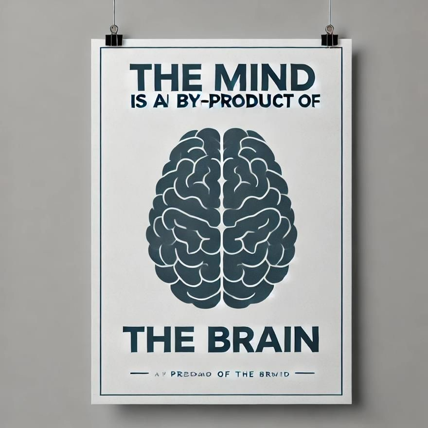
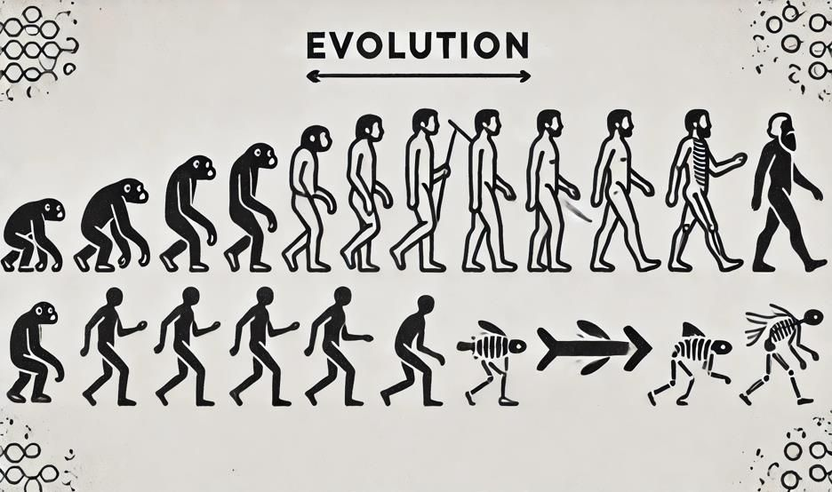

Paper 2 · Spec 3.4.2
Property dualism
One substance, two kinds of property? Take the tour: what property dualism claims, Chalmers’ zombies, Jackson’s Mary, the responses to each, and the issues facing epiphenomenalism.
One substance, two kinds of property? Take the tour: what property dualism claims, Chalmers’ zombies, Jackson’s Mary, the responses to each, and the issues facing epiphenomenalism.
Substance dualism says the mind is a separate thing. Most philosophers today reject that: as far as we can tell, there is no soul, only the brain. But accepting that there is only one kind of substance does not settle everything. A brain has physical properties – it weighs about 1.4 kg, it contains neurons firing at certain rates. Does it also have properties that are not physical, such as the felt redness of seeing a tomato or the hurtfulness of pain? AQA defines property dualism as the view that there are at least some mental properties that are neither reducible to nor supervenient upon physical properties.
The question matters because physicalism is the dominant view in philosophy and science. If even one property of experience is non-physical, then a complete physics – knowing the position and state of every particle – would still leave something out. The two arguments on the specification, David Chalmers’ zombie argument and Frank Jackson’s knowledge argument, both aim to show exactly this, using the qualia you met in 3.4.1.
The departmental slides put the key thesis like this: there is only one category of substance, physical substance, but there are two categories of properties, physical and mental. As regards consciousness, the mind needs the brain as a physical substance in order to exist. But the brain has both physical properties, such as its size and weight, and mental properties, such as being elated or seeing a bright colour. Property dualism is an umbrella term covering several theories.
To understand AQA’s definition, you need two technical terms.
A property is reducible to physical properties if it is identical to them, or can be fully explained by them – as the temperature of a gas is just the mean kinetic energy of its molecules.
One set of properties supervenes on another if there can be no difference in the first without a difference in the second. Jaegwon Kim states it like this (as quoted in the departmental handout):
‘if any system s instantiates a mental property M at t, there necessarily exists a physical property P such that s instantiates P at t, and necessarily anything instantiating P at any time instantiates M at that time.’Jaegwon Kim, as quoted in the departmental handout Physicalism
The handout’s example is a pointillist painting: its aesthetic properties and what it depicts exist in virtue of the dots, their places and their colours. Two paintings with exactly the same dots in the same places could not differ in what they depict.
There is a two-way interaction between the physical world and mental properties. If I take a medicine, it affects my mental properties; if I have the mental property of feeling hungry, it may cause me to go to the kitchen. Mental properties are causally efficacious.
There is only a one-way interaction: the physical world can affect mental properties, but mental properties cannot cause anything physical. Qualia are by-products of brain activity. Frank Jackson defended this in ‘Epiphenomenal Qualia’ (1982).

The handout quotes Jackson stating that he will defend the view that certain properties of certain mental states – those he calls qualia – are such that their possession or absence makes no difference to the physical world. Why would anyone accept this? Because it is a way of respecting the causal closure of the physical while still holding that qualia are non-physical. The interactionist property dualist faces the same empirical interaction problem as Descartes.
Chalmers distinguishes ‘easy’ and ‘hard’ problems of consciousness. The easy problems concern how a system reports information, discriminates stimuli and controls behaviour; there is no obvious obstacle to explaining these in neurobiological or computational terms. The hard problem is the problem of experience: there is something it is like to be a human being. Experience is clearly associated with physical processes, but why do those processes not take place ‘in the dark’, with no accompanying experience at all? (Paraphrased from the handout’s quotations of Chalmers.)
A philosophical zombie is not a film monster. It is a being that is physically identical to a conscious human – molecule for molecule – and so behaves identically, but lacks consciousness entirely. From the third-person point of view it is indistinguishable from you: it says ‘I love the smell of coffee’ and winces at pain. But there is nothing it is like to be a zombie. A zombie world is a physical duplicate of our world with no consciousness anywhere in it.
Chalmers does not claim zombies exist. He claims they are conceivable: we can coherently imagine them, and there is no contradiction in the idea that reveals itself even on reflection.
The underlying idea: we cannot know a priori, just by inspecting our concepts, that the physical facts entail the facts about experience. The concept of the physical and the concept of experience do not entail one another. Chalmers infers that the things themselves are ontologically distinct.
It seems to us that we can conceive of a zombie, but what we are really thinking of is incoherent – like thinking that 2 + 2 = 5 without noticing the error. If we fully understood what consciousness is (for example, a complex set of functional or behavioural capacities), we would see that a being physically and functionally identical to us must be conscious. Dennett is a prominent example. Notice that if behaviourism or functionalism is true, a zombie would be a contradiction, since it has all the relevant behaviour and functions.
This seems to deny the datum. When we imagine a zombie, we are not overlooking a hidden contradiction; we are imagining the physical story without the experiential one, and nothing in the physical story seems to demand experience. The burden is on the type-A physicalist to show the contradiction.
Zombies are conceivable but not possible. Compare water and H₂O: the concept water is different from the concept H₂O, so we can conceive of water that is not H₂O; but since they are in fact the same, it is metaphysically impossible. Likewise, the concept pain differs from the concept of a brain state, so zombies are conceivable – yet if pain is that brain state, zombies are impossible. This lets the physicalist acknowledge the deep epistemic gap while keeping a materialist worldview.
The analogy fails. If someone knew every physical fact about the world, they could work out the facts about water (that the stuff in our rivers is H₂O). But someone could know every physical fact about the brain and still not know what experience is like. So there is no epistemic gap between the physical truth and the truth about water analogous to the gap with consciousness. Physics only gives a ‘structural-dynamic’ description; consciousness cannot be captured that way.
Even if a zombie world is possible, that only shows that in some possible world physical duplicates of us lack consciousness. It does not follow that in the actual world consciousness is anything over and above the physical. Perhaps in our world consciousness is physical, though it might not have been. Physicalism, on this view, is a contingent truth about our world.
Physicalism is usually understood as the claim that the physical facts necessitate all the facts – that any world physically like ours is like ours in every respect. A zombie world is precisely a world physically like ours that differs. So if zombies are possible, physicalism as normally defined is false. The responder must redefine physicalism, which may seem like changing the subject.
The zombie argument is valid, and its third premise is secure if physicalism is a thesis about necessitation. The debate therefore turns on premises 1 and 2. Type-A responses are bold but have to deny what most people find obvious. Type-B responses are more popular: they accept the conceivability and deny the possibility. Chalmers’ reply – that the water case involves no comparable gap – is strong, but the type-B physicalist can answer that consciousness is special only because our phenomenal concepts are special (see the new knowledge/old fact response to Mary, Stop 3). A reasonable judgement is that the zombie argument shows that consciousness cannot be derived a priori from physics, but does not establish that consciousness is non-physical, because we lack an independent reason to trust the move from conceivability to possibility in this case.
Frank Jackson’s ‘Epiphenomenal Qualia’ (1982) aims to refute physicalism by showing that physical information is incomplete. He says there are certain features of bodily sensations and perceptual experiences that no amount of purely physical information includes – the hurtfulness of pains, the itchiness of itches, the experience of tasting a lemon or seeing the sky. (Paraphrased from the handout’s quotation.)
Mary is a brilliant scientist who, for whatever reason, is forced to investigate the world from a black-and-white room via a black-and-white television monitor. She specialises in the neurophysiology of vision and acquires all the physical information there is about what goes on when we see ripe tomatoes or the sky and use words like ‘red’ and ‘blue’. She knows exactly which wavelengths stimulate the retina, and exactly how this produces, via the central nervous system, the utterance ‘The sky is blue’. Then she is released, or given a colour monitor. Jackson writes:
‘It seems just obvious that she will learn something about the world and our visual experience of it.’Frank Jackson, ‘Epiphenomenal Qualia’ (1982), as quoted in the departmental handout
David Lewis argues that Mary does not gain new propositional knowledge (knowledge that); she gains ability knowledge (knowledge how). Knowing what it is like to see red is the possession of abilities: to remember, imagine and recognise red. That is knowing how, not knowing that. Since she learns no new fact, the argument does not show there are non-physical facts.
(1) Seeing red gives Mary new abilities, but that does not seem to be all: she also comes to know something new about other people’s experiences, which looks like a fact. (2) Ability and knowing what it is like can come apart. Someone unable to imagine red could still know what seeing red is like when they see it; and as Hume’s missing shade of blue suggests, one might imagine a colour without ever having seen it.
Jackson confuses propositional knowledge – knowledge by description – with acquaintance knowledge, a distinction from Russell’s The Problems of Philosophy (1912), which you met in epistemology. Knowing that red is a certain wavelength is knowing about red; having seen red is being acquainted with it. Mary gains acquaintance with a property she already knew all about. Patricia Churchland makes this objection in the departmental handout.
(1) Jackson can say it does not matter what type of knowledge is gained; the question is whether Mary knew everything before, and she did not. (2) Acquaintance seems to bring propositional knowledge with it: to know what it is to see red is to know that seeing red is like this. That is learning a new fact.
Mary does gain new propositional knowledge – but it is knowledge of a physical fact she already knew in a different way. Compare: you can know that Hesperus is bright and not know that Phosphorus is bright, though they are the same planet. Michael Tye’s version (as set out in the handout):
If there are two ways of knowing one fact, there must be two different modes of presentation – ways the fact is given to us. Hesperus and Phosphorus are presented by different physical properties (seen in the evening, seen in the morning). So what physical property presents the experience to Mary under the phenomenal concept? If it is a non-physical quale, dualism returns at the level of the mode of presentation.
The ability response is elegant but seems to leave something out: Mary’s new insight into other people looks factual. The acquaintance response risks conceding that acquaintance brings new propositional knowledge. The new knowledge/old fact response is the strongest, because it grants Jackson’s intuition while denying his conclusion – but it depends on a story about phenomenal concepts that dualists argue smuggles qualia back in. Notably, Jackson himself later abandoned the argument and became a physicalist. A fair judgement is that the knowledge argument shows that physical knowledge, acquired from the third-person point of view, does not give the first-person knowledge of what experience is like; it does not clearly show that what is known in the first-person way is a non-physical fact.
Epiphenomenalism avoids the interaction problem by denying that mental properties cause anything physical. The specification names three challenges this creates. (The departmental slides add two more – it leads to the problem of other minds, and it may make a category mistake – which are covered for dualism in general.)
When I introspect, I come to know that I am in pain, and I report it: ‘I am in pain.’ The report is a physical event. If my pain-quale causes nothing physical, then it does not cause my belief or my report. But then my report that I have qualia would be exactly the same even if I had none – my zombie twin says the same thing. So how can I know I have qualia?
Perhaps my knowledge of my qualia is not causal but constitutive: I know my experience by being acquainted with it, not by being caused to believe something about it. The quale is part of the experience in which I know it. The cost is that this knowledge can make no difference to anything I say or do – including writing papers defending epiphenomenalism.
Our mental life seems, from the inside, to involve causal connections. Psychological: my belief that it is raining and my desire to stay dry together lead me to decide to take an umbrella. Psycho-physical: my pain makes me cry out. The slides put it like this: it is supposed to be just obvious that the hurtfulness of pain is partly responsible for the subject seeking to avoid pain, saying ‘it hurts’ and so on. If epiphenomenalism is true, our intuition that we have gone to the kitchen at least partly because we felt hungry is false.
Experienced causation is not proof of causation. Hume argued we never perceive causal connections, only constant conjunction. A regular correlation between pain and avoidance would look exactly like causation from the inside, even if both are effects of a common brain cause – as the falling barometer and the storm are both effects of falling air pressure.
This makes our whole mental life systematically misleading. It is not just one belief that is false; it is the pervasive sense that what we feel matters to what we do. A theory that requires this has a high cost and should be accepted only if nothing better is available.

According to Darwinism, traits that evolve over time are those conducive to survival. Qualia probably evolved: they are widespread among animals and seem closely tied to survival (pain is horrible, food tastes good). But if qualia cannot affect the physical world, they cannot affect behaviour, so they cannot help an organism survive or reproduce. Then natural selection cannot explain why we have them.
Not every evolved trait is selected for its own sake. Some are by-products of traits that are useful. Jackson’s example is the polar bear’s heavy coat: the coat is a by-product of genes selected because they produce a warm coat; its heaviness is a disadvantage. Likewise, qualia may be by-products of the brain processes that were selected for. So premise 1 is true only in a weak sense, and premise 2 does not apply.
The by-product reply does not explain the striking fit between qualia and survival – why the brain state that makes us avoid damage feels bad rather than pleasant or neutral. On epiphenomenalism, it would have made no difference if pain felt like tickles. The match looks like a remarkable coincidence.
Epiphenomenalism is the price property dualism pays for respecting causal closure, and it is a heavy one. The self-knowledge challenge is the most serious, since it seems to make the epiphenomenalist’s own belief in qualia unjustified – the very belief the theory exists to protect. The evolutionary challenge can be partly met by the by-product reply, but not the fit between qualia and function. A sustained judgement: interactionist property dualism faces the interaction problem; epiphenomenalist property dualism faces these three challenges; so even if the zombie and Mary arguments worked, property dualism would be left in a difficult position about what qualia do.
Property dualism improves on substance dualism by accepting that there is only one kind of substance, but it faces a dilemma about what mental properties do. Its two arguments both trade on an epistemic gap between physical and phenomenal knowledge. The zombie argument moves from that gap to a metaphysical conclusion via the claim that conceivability implies possibility; type-B physicalists deny that step. The knowledge argument moves from the gap via the claim that Mary learns a new fact; the ability, acquaintance and new knowledge/old fact responses each deny that step in different ways, and the third is strongest. A sustained judgement: both arguments succeed in showing that consciousness cannot be known through physical description alone, but neither shows conclusively that consciousness is non-physical; and the epiphenomenalism that property dualists must adopt to respect causal closure undercuts our knowledge of qualia. Property dualism is best seen as the strongest statement of a problem, not yet a convincing solution.